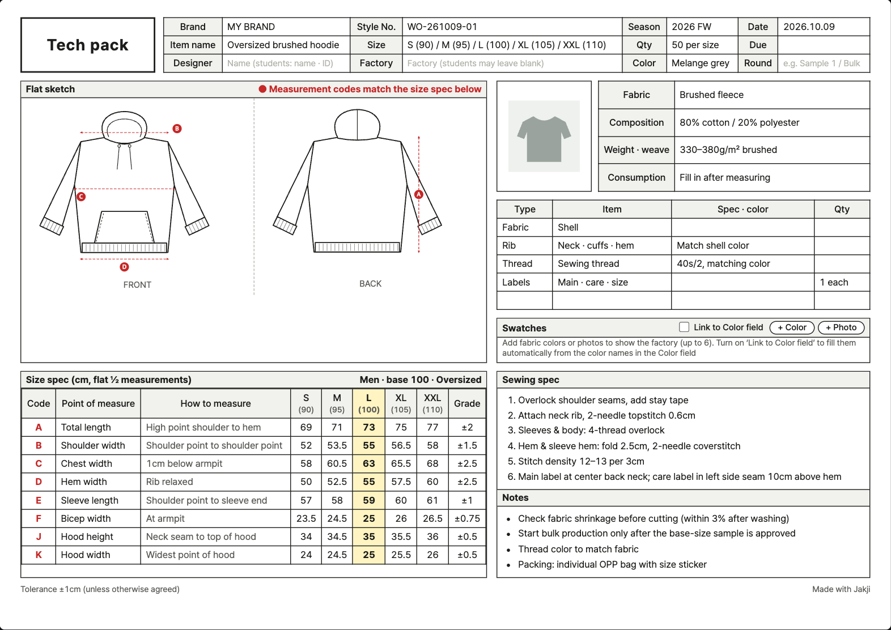

Flats
Automatic front & back flats
Line drawings that follow the item and details, with measurement codes (A, B, C…) marked in red and linked to the size spec.
For indie brands and fashion students
Jakji (작지) is what Korean garment factories call a tech pack. Built for one-person brands sending their first sample and fashion students learning the format: pick a garment and sizes, and you get flat sketches · size spec · sewing spec on a single A4 sheet.
Free, no sign-up · photo recognition runs on your device · save your work and continue later

Everything a factory needs for a sample, in four steps.
Pick the sizes you need and a base (sample) size. Sizes follow Korean labels — men 80–110, women 44–88 — with letter sizes shown alongside.
Choose a style (e.g. tennis skirt), neckline and pockets. In the Edit flats tab, drag handles to adjust proportions and add notes or arrows. Have a photo? The Photo analysis tab can identify the item.
Check for missing items, calculate cost and margin, build a color × size order sheet, draft care label text and log sample fittings.
Correct the numbers to your sample's measurements, then print to PDF, export Excel (CSV), keep it in ‘My styles’ or send a share link to your factory.
Laid out the way garment workshops in Seoul's Dongdaemun district expect it.
Line drawings that follow the item and details, with measurement codes (A, B, C…) marked in red and linked to the size spec.
Base values and grade rules fill in all sizes, with oversized/slim adjustments and waist inches for bottoms.
Default construction notes — overlock, 2-needle, coverstitch, rib — in words factories understand.
Choose jersey, French terry, denim, oxford and more to fill composition and weight; a trims list is prepared for each item.
Drafts pattern pieces for all 34 styles from your tech pack measurements, including collars, closures, yokes and pleats. Prints full size on tiled A4 or one large sheet.
Finds the blanks a factory will ask about, and calculates cost per piece, margin and order quantities. Includes care label text (Korean rules) and a sample fit log.
Save and duplicate styles, and send one link to your factory or phone. Recipients view and print read-only without an account; cost data is left out by default.
Item, detail and color recognition runs free inside your browser. Photos are never sent to our server or to an AI company.
People making clothes without a pattern room or production manager, and people learning how the industry works.
Show a factory a photo and say "something like this", and samples come back again and again. Agree on numbers and drawings instead, and revisions drop.
Organize what you learned about flats, measuring and sewing terms into the tech pack format used in production.
Common questions before you start.
Yes, it's free and needs no sign-up. Print the tech pack or save it as PDF or HTML.
No. The size spec uses regular-fit reference values for each item. Measure your sample, click the numbers in the table to correct them, and then send it.
Your photo is processed only inside your browser and is never stored on our server. Photo recognition also runs on your device, so the photo never leaves it.
Korean size labels: men 80–110 (about XXS–XXL) and women 44–88 (about XS–XL). In the English view each size also shows its letter size, and bottoms can show waist inches. You can rename sizes and type your own measurements on the tech pack.
34 styles in 6 categories (tops, outerwear, pants, skirts, dresses, accessories), e.g. cropped tee, polo, sleeveless, zip-up hoodie, blouson, denim jacket, wide pants, slacks, jeans, joggers, cargo pants, A-line, pleated, tennis, mermaid and wrap skirts, shirt dress and a zipper pouch.
Yes, in beta. For all 34 styles it drafts front, back, sleeve, collar, hood and other pieces from the base-size measurements, including style-specific shapes like polo collars, cardigan bands, zip-up fronts, jeans yokes, slacks pleats, elastic jogger waists, pleated and wrap skirts. It shows seam allowances, folds, notches and grainlines and prints full size on tiled A4 or one large sheet. It hasn't been verified by real cutting yet — always make a test garment first.
Yes. ‘My styles’ keeps multiple styles (with photos) in your browser. ‘Share link’ packs the tech pack into a link the recipient can open read-only and print, without an account. Photos are never included, and cost/margin only if you choose.
Yes. Use the ‘Tech pack language’ menu above the tech pack to choose Korean, English or Korean + English. The tool's screen stays as it is while the tech pack's labels, points of measure, sewing spec, notes and care label text change, and the same language goes to print, PDF, HTML and Excel (CSV). For a Korean factory choose Korean or Korean + English; for overseas factories, English or Korean + English. Text you typed yourself isn't translated, and bilingual tables are longer, so print text gets a little smaller to keep one page.
No photo needed — just pick a garment and start.
Please use Jakji for your own designs and samples. Copying the shape of another company's product can be illegal (in Korea, under the Unfair Competition Prevention Act).